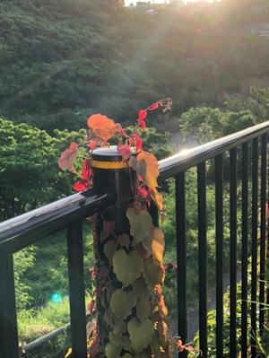

うるがいの話 ある日
最新: 似ている人達
うるがいとは 前提知識です
カニの画像をクリックすると『うるがいの話』サイトを表示します
うるがい(ｳﾙｶﾞｲ urugai)とは、『もずくがに』の名前でとても大きくなります。
たながー（ﾀﾅｶﾞｰtanagaa）とは手長えびのことで、何種類かあり大きいのは車 エビぐらいになります。
ぶながー(bunagaa)とは、赤い髪の毛、赤い身体、そして身長は１ｍ２０ｃｍ ぐらい、川の蟹を食べているの目撃された。場所は沖縄県国頭郡大宜味村のと ある村僕の隣近所に住んでいる爺さんから、聞いた話です。
2021年08月24日 (火）
似ている人達
16:44

「ＢＳ時代劇」神谷玄次郎捕物控で『題名のない音楽会』の司会している石丸
幹二が悪役をしている！、この人、いつも悪い役にでている。そういゆうキャ
ラでないのにとヨメに言うと違う！、この人は別の役者、ん！でも似ている。
言われてもＨァ、ヤフーで調べるかと検索キーで石丸幹二と名前を入れると『
石丸幹二 に似ている』と検索補助一覧に現れた、ほほう！やはり、でこれを
そのまま流用して検索する。石丸幹二と飯田基祐（いいだきすけ）そっくり率
８４．０５％となるほど間違えるわけだ。よく見ると違うね、・・老人は良く
人を間違える、私もそうかも。アマゾンからＳＳＤが届いた。このタイミング
でメインで利用しているＰＣ１のデータを、ＰＣ２へ最近更新したデータをコ
ピーするかと、更新したファイルを調べるプログラムを使うことにした。とこ
ろが、探せない！午前中一杯調べたが諦める。もともとネットで紹介されたプ
ログラムなのでネットで調べてみる、探せない、諦める。作る事にした。２時
間ほどかかってプログラムを作成した。記録は大切であると痛感する。